Обзор
В этом руководстве описывается процесс использования альфа-смешенных декалей для создания разбитых бетонных кусков и руин зданий высокого визуального качества.
В большинстве игр разрушенные стены и другие конструкции зданий создаются путем простого вырезания геометрии и применения плиточной текстуры бетона к сломанной области.
Несмотря на то, что это эффективно и просто, недостатком этого метода является то, что между двумя материалами остается очень заметный и острый шов. Более трудоемкое, но визуально лучшее решение — использовать декали с альфа-смешением, чтобы избежать этих швов.
Традиционная техника
Обратите внимание на острый шов между двумя материалами (отмечен оранжевым).
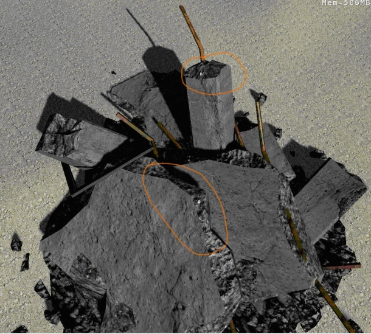
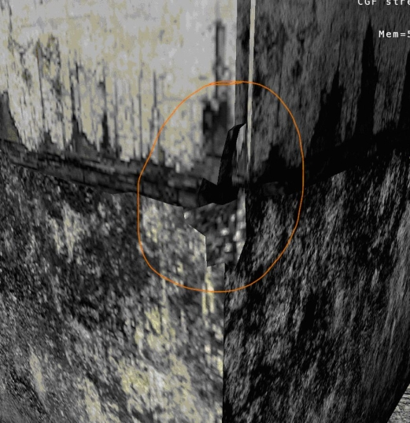
Альфа-смешанные наклейки
Обратите внимание на более правдоподобный переход между двумя материалами (отмечен оранжевым).
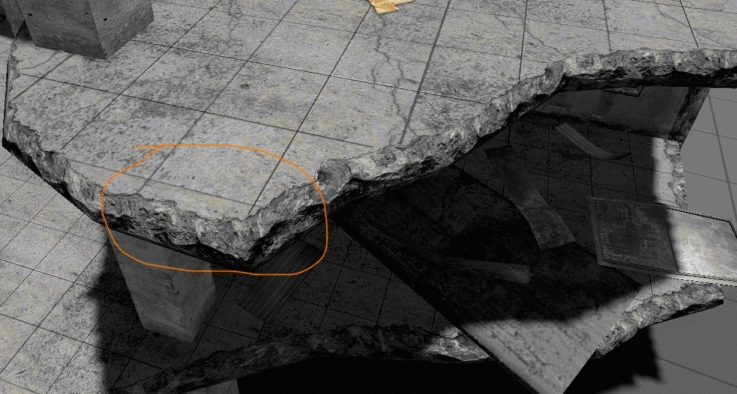
Карта нормалей, использованная для этой декали:
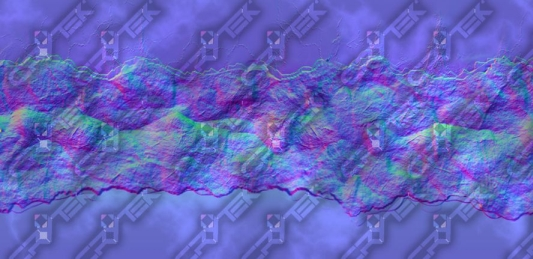
Пример «отколовшихся» частей с использованием декалей Alphablend:
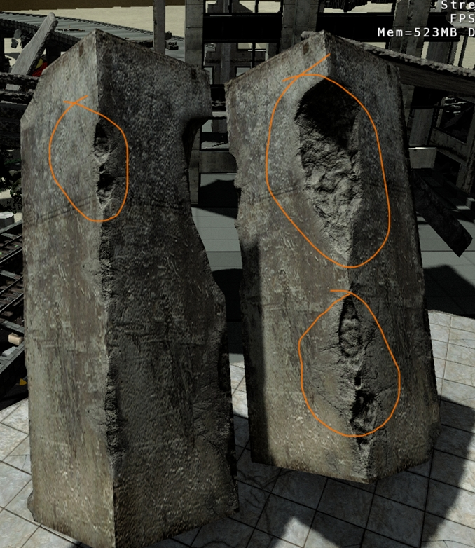
Карта нормалей, использованная для этой декали:
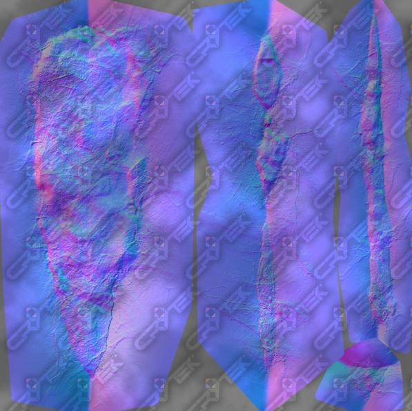
Использование этих наклеек в 3D-приложении
- Добавьте дополнительный элемент геометрии для сломанного края.
- Выдавите края границы этого элемента внутрь, чтобы они перекрывали другой материал.
- Отрегулируйте отображение элемента UV, чтобы создать перекрытие.
Здесь вы можете увидеть дополнительный элемент геометрии, следующий за краем сломанной части здания:
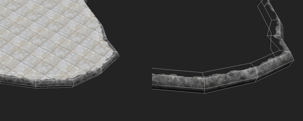
Здесь вы можете увидеть, как нужно настроить отображение UV, чтобы создать убедительное перекрытие двух материалов:
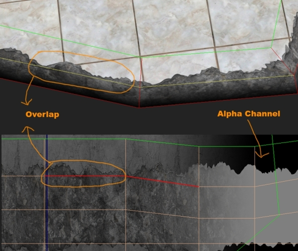
Используйте наклейки со сколами по краям,
- Дублирование геометрии любого края, на котором вы хотите их использовать.
- Вырезаем ту часть, где будет видна наклейка.
- Настройка отображения UV для отображения надписи в правильном положении.
Иллюстрация этих шагов:
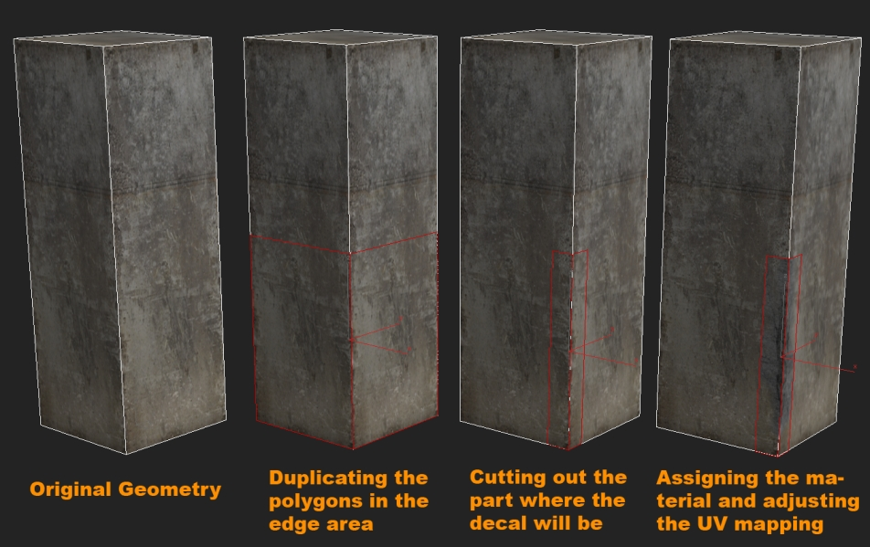
Другой пример:
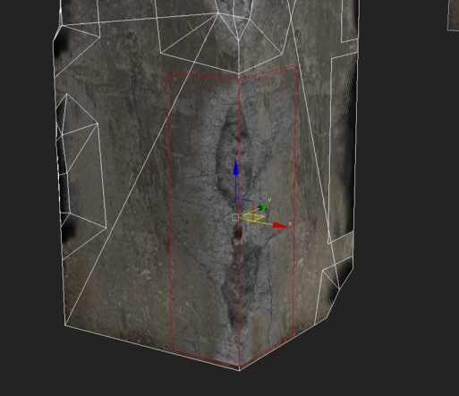
Для достижения наилучших результатов используйте геометрию с низким разрешением, которую вы использовали для рендеринга карты нормалей, прикрепите ее к краю объекта, над которым вы работаете, и вырежьте его форму из твердого блока, используя инструмент «Нож» вместе с привязкой вершин.
Используя этот метод, вы также получите правильный силуэт.
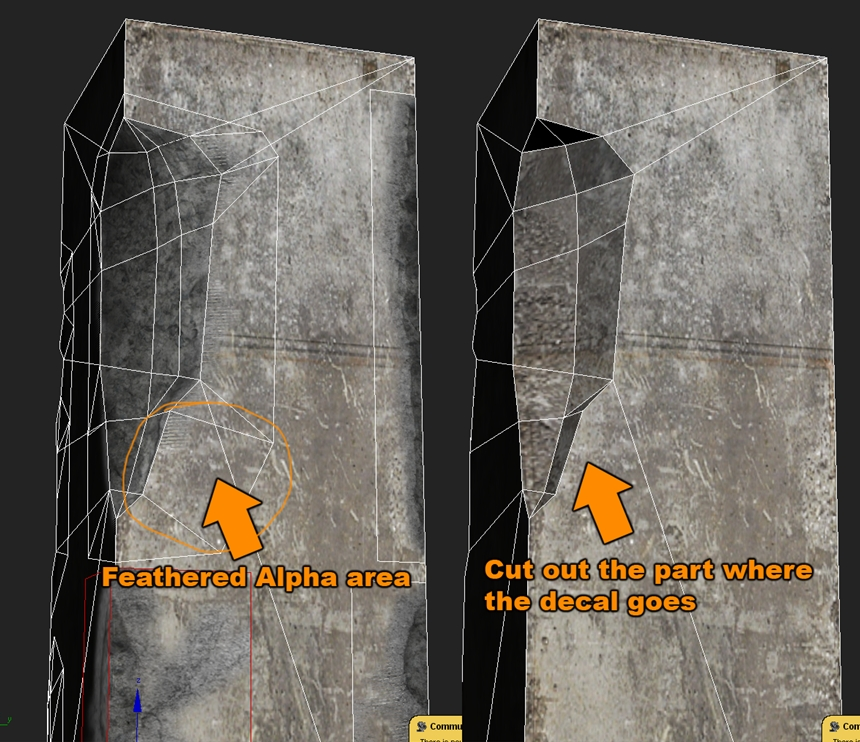